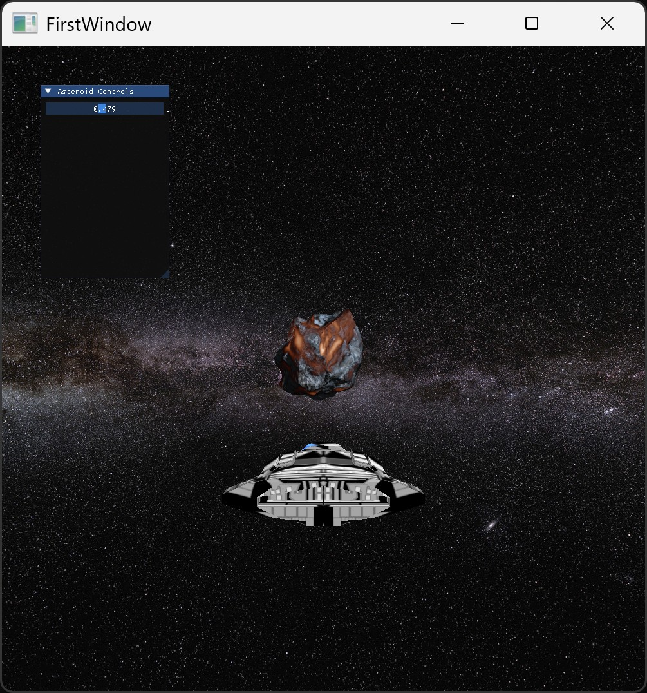

W tym laboratorium zbudujesz realistyczną scenę w przestrzeni kosmicznej zawierającą asteroidę z efektem magmy oraz statek kosmiczny otoczony skyboxem. Nauczysz się używać shaderów PBR, tekstur mapujących materiały oraz sterowania parametrami przez GUI.
Zmiany wprowadzaj w pliku ex_7_1.hpp oraz w shaderach w katalogu shaders/.
Zadanie:
init załaduj model asteroidy (Rock001.obj) i model statku (spaceship2.obj) przy pomocy funkcji loadModelToContext.sphereContext (asteroida) i shipContext (statek).drawObjectTexture do rysowania asteroidy i drawObjectShip do rysowania statku.Zadanie:
_px.jpg, _nx.jpg, _py.jpg, _ny.jpg, _pz.jpg, _nz.jpg.init do zainicjalizowania VAO i VBO skyboxa:const char* faces[6] = {
"textures/skybox/_px.jpg",
"textures/skybox/_nx.jpg",
"textures/skybox/_py.jpg",
"textures/skybox/_ny.jpg",
"textures/skybox/_pz.jpg",
"textures/skybox/_nz.jpg"
};
glGenVertexArrays(1, &skyboxVAO);
glGenBuffers(1, &skyboxVBO);
glBindVertexArray(skyboxVAO);
glBindBuffer(GL_ARRAY_BUFFER, skyboxVBO);
glBufferData(GL_ARRAY_BUFFER, sizeof(skyboxVertices), skyboxVertices, GL_STATIC_DRAW);
glEnableVertexAttribArray(0);
glVertexAttribPointer(0, 3, GL_FLOAT, GL_FALSE, 3 * sizeof(float), (void*)0);
glBindVertexArray(0);
skyboxCubemap = Core::LoadCubemap(faces);Napisz własny shader skyboxa: vertex shader oraz fragment shader zapisując je np. w plikach skybox.vert i skybox.frag. Użyj poniższego kodu jako punktu wyjścia:
// skybox.vert
#version 430 core
layout (location = 0) in vec3 aPos;
out vec3 TexCoords;
uniform mat4 view;
uniform mat4 projection;
void main() {
TexCoords = aPos;
vec4 pos = projection * view * vec4(aPos, 1.0);
gl_Position = pos.xyww;
}
// skybox.frag
#version 430 core
in vec3 TexCoords;
out vec4 FragColor;
uniform samplerCube skybox;
void main() {
FragColor = texture(skybox, TexCoords);
}
Załaduj shadery do OpenGL za pomocą shaderLoader.CreateProgram("shaders/skybox.vert", "shaders/skybox.frag") i przypisz do zmiennej programSkybox w funkcji init.
Następnie dodaj renderowanie skyboxa na początku funkcji renderScene:
glDepthFunc(GL_LEQUAL);
glUseProgram(programSkybox);
glm::mat4 view = glm::mat4(glm::mat3(createCameraMatrix()));
glm::mat4 projection = createPerspectiveMatrix();
glUniformMatrix4fv(glGetUniformLocation(programSkybox, "view"), 1, GL_FALSE, &view[0][0]);
glUniformMatrix4fv(glGetUniformLocation(programSkybox, "projection"), 1, GL_FALSE, &projection[0][0]);
glBindVertexArray(skyboxVAO);
glBindTexture(GL_TEXTURE_CUBE_MAP, skyboxCubemap);
glDrawArrays(GL_TRIANGLES, 0, 36);
glBindVertexArray(0);
glUseProgram(0);
glDepthFunc(GL_LESS);
Wyjaśnienie: Skybox jest renderowany w specjalny sposób – używamy tylko macierzy rotacji z kamery (bez translacji), aby wyglądało, że jesteśmy w centrum sześciennego środowiska. W vertex shaderze zwracamy gl_Position = pos.xyww; aby przesunąć punkt z głębią 1.0, co zapewnia, że skybox jest zawsze na tle sceny. W fragment shaderze próbkujemy teksturę cubemap używając współrzędnych teksturowania odpowiadających wektorowi kierunku.
Dzięki tej technice skybox będzie zawsze wyglądał, jakby otaczał kamerę, bez względu na jej pozycję. Upewnij się, że glDepthFunc(GL_LEQUAL) jest ustawione przed rysowaniem skyboxa, aby nie zakrywał obiektów w scenie.
Zadanie:
shader_5_1_tex.frag zaimplementuj efekt magmy poprzez mieszanie koloru powierzchni z kolorem magmy na podstawie wartosci heightMap.smoothstep i mix, aby uzyskac efekt zarzenia tylko w zaglebieniach asteroidy.glowThreshold w GUI i przesylaj wartosc jako uniform do shaderu.Fragment kodu do analizy:
float magmaWeight = smoothstep(glowThreshold, 0.0, height);
vec3 magmaColor = mix(vec3(1.0, 0.5, 0.0), vec3(1.0, 0.9, 0.8), pow(magmaWeight, 1.5));
magmaColor = mix(vec3(0.5, 0.0, 0.0), magmaColor, magmaWeight);Zadanie dodatkowe: Pobaw sie suwakiem glowThreshold i zaobserwuj zmiany efektu. Co by sie stalo, gdybys mieszal magmaColor nie z ostatecznym textureColor po oswietleniu, ale tylko z albedo przed oswietleniem? Przetestuj obie wersje.
Zadanie:
shader_5_1_tex.frag model oświetlenia PBR: Cook-Torrance.metallicMap, roughnessMap, normalMap, heightMap.roughness i metallic jako uniformy.Aby lepiej zrozumiec teorie PBR, przeczytaj rozdzial PBR Theory na stronie LearnOpenGL.
PBR (Physical Based Rendering) to technika, ktora pozwala na znacznie bardziej realistyczne odwzorowanie materialow dzieki odwzorowaniu fizycznych wlasciwosci powierzchni. W PBR stosujemy tekstury: albedo, metalness, roughness, normal, ambient occlusion i height. Kluczowe cechy PBR to:
Dzieki tym zalozeniom materialy w scenie beda wygladac dobrze niezaleznie od warunkow oswietleniowych. Wiekszosc silnikow gier (jak Unreal Engine) stosuje ten model. Zastosowanie PBR wymaga uzycia tekstur z parametrami fizycznymi oraz odpowiednich funkcji w shaderze fragmentow.
Zadanie:
emit.png i emit_intensity.png).roughness, metallic, glowThreshold, roughnessShip i metallicShip.Dla efektu świecenia silników statku, użyj map emisji i wyrenderuj je w shaderze **bez dodatkowego modelu oświetlenia** – sam kolor emisji doda efekt świecących elementów (turkusowe podświetlenie silników). Możesz użyć osobnego kanału tekstury (np. emit_intensity.png) aby kontrolować intensywność efektu.
Zadanie dodatkowe:
Dodaj warunek w shaderze lub w aplikacji, aby silnik statku świecił **tylko podczas ruchu** (np. jeśli użytkownik naciska W, A, S, D). W przeciwnym razie emisja powinna być wyłączona (np. ustaw uniform emissionIntensity = 0.0 gdy nie porusza się).
Scena powinna wyglądać jak realistyczna symulacja przestrzeni kosmicznej z pełną kontrolą materiałów oraz efektami specjalnymi poprzez GUI.